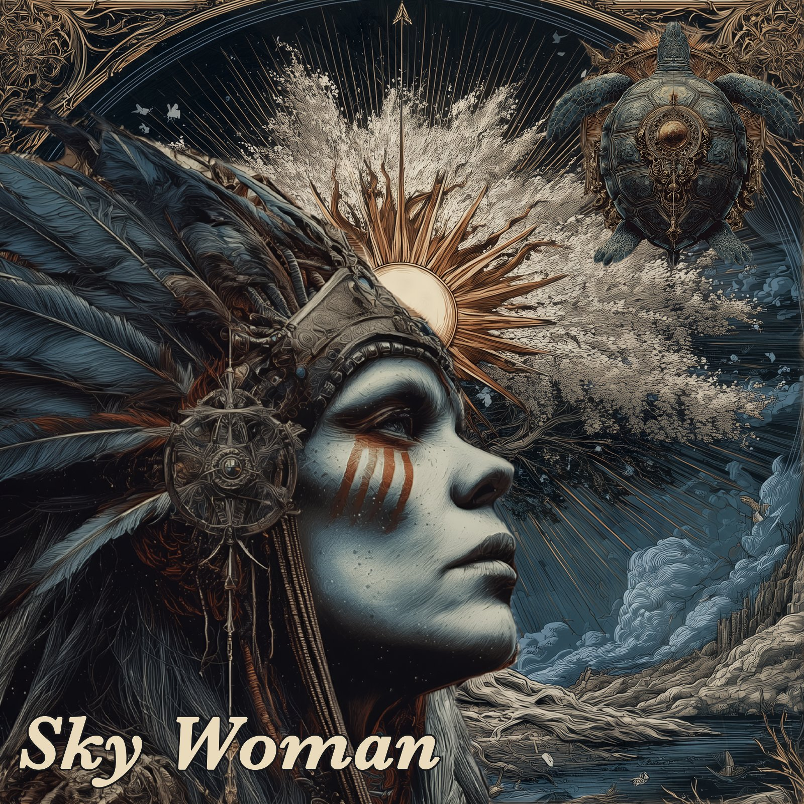

Sky Woman
The Story
Native Iroquois legend tells of a great island floating high in the sky amongst the clouds, where the Sky People lived long before the world that we know existed. There was no death among them, no sadness — only an eternal luminous peace.
But Sky Woman was with child — carrying twin sons — and her husband, consumed by jealousy and rage, tore out the great light-giving tree at the center of their island and pushed her through the hole into the void below. Two great birds caught her falling form and carried her down toward the dark waters of the primordial earth.
There, the animals gathered. A great turtle offered the shell of its back. Others dove to the seafloor to bring up mud, which they spread upon the turtle's shell, and from that small beginning, the earth was made. Sky Woman stepped onto that land and created the moon, the sun, and the stars. She gave birth to twin sons — Sapling, the gentle creator of beaches and rainbows, and Flint, the agent of chaos, who made winter, volcanoes, and poison. The Great Spirit was pleased with their work. The final gift she gave to humanity was the freedom to dream — not foreseeing what they would do with it.
Lyrics
Native Iroquois legend tells of a great island
Floating high in the sky amongst the clouds
On which the Sky People lived long before
The world that we know existed
Feelings of death and sadness
Were not experienced amongst the Sky People.
However, one day the Sky Woman
Realized she was giving birth to twins
Her husband flew into a rage
Her husband tore out a light-giving tree and
as she peered down through the hole
her husband pushed her to the world below
Two birds caught her in the air
And carried her to other animals
And together they created the land
By bringing mud from undersea
(To the shell of a turtle's back)
The Sky Woman stepped onto that land
And created the moon, sun and stars.
She gave birth to twin sons, Sapling and Flint
Sapling was the good son
He was gentle and kind, empathy on his mind,
creating beaches and rainbows
But edgy Flint was close behind
seeking to sabotage and undermine
Flint made sure the rivers flowed
In only one direction
He put spiky bones in fish and thorns
On rose and berry bushes
He created winter, ice, earthquakes
Volcanoes and tornadoes
He put poison into snakes and spiders
And on toads and ivy too
The Great Spirit, Mother of birth
Was pleased with the work they had done on the earth
The final gift she bestowed onto man
Was the freedom to dream and rule over the land
But she had not factored him willing
To savagely murder - take pleasure in killing
Each other, all animals, the ocean, forests
Everything that breathes